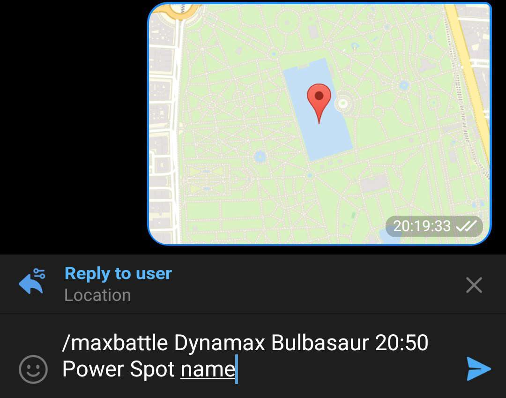
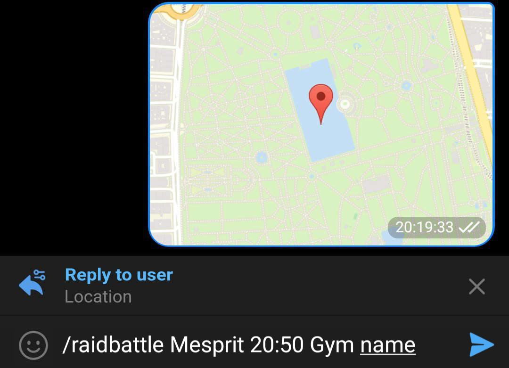
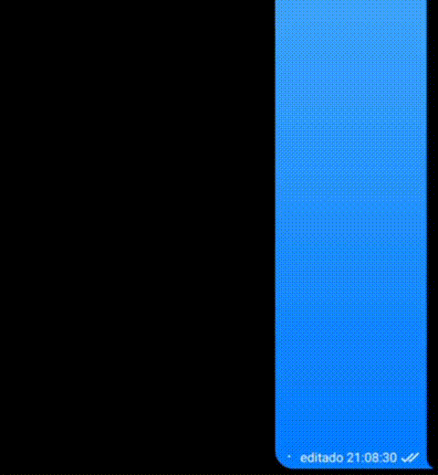
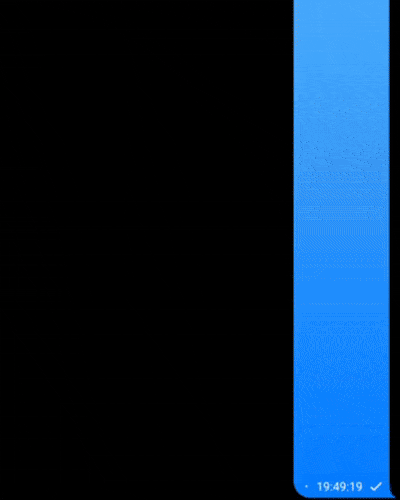
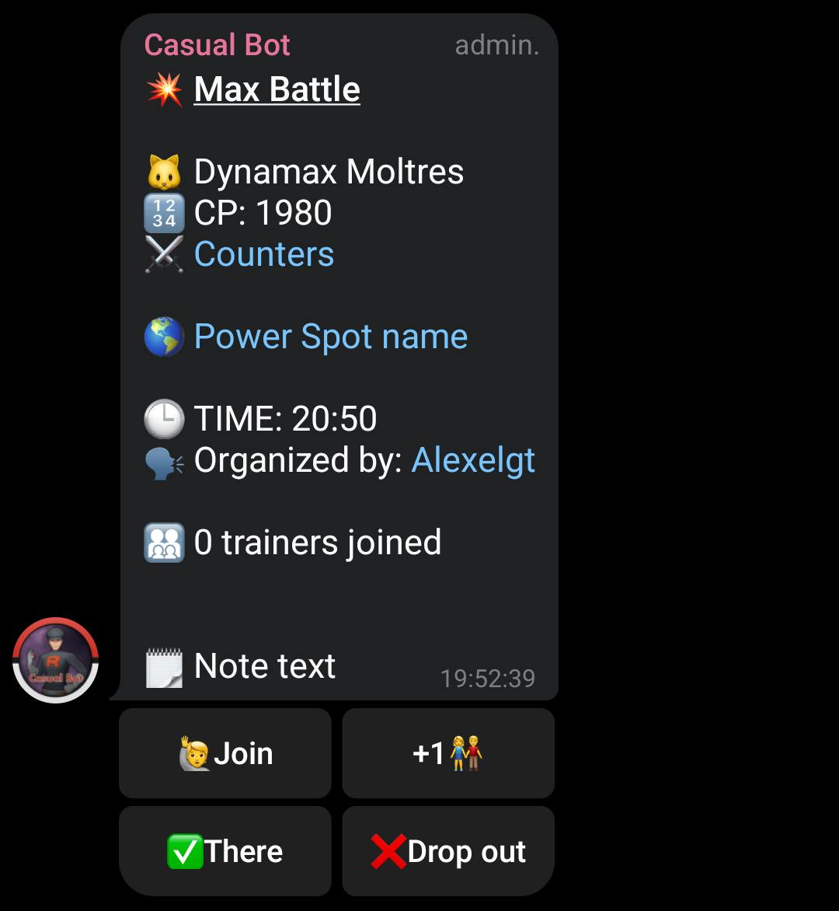
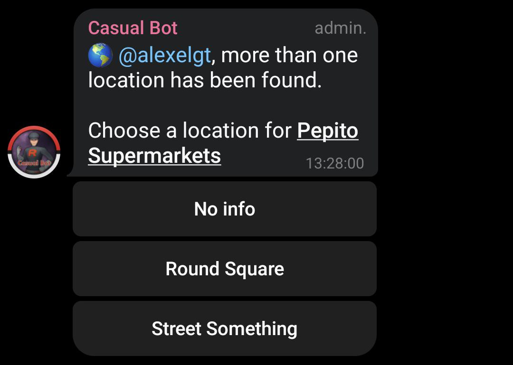
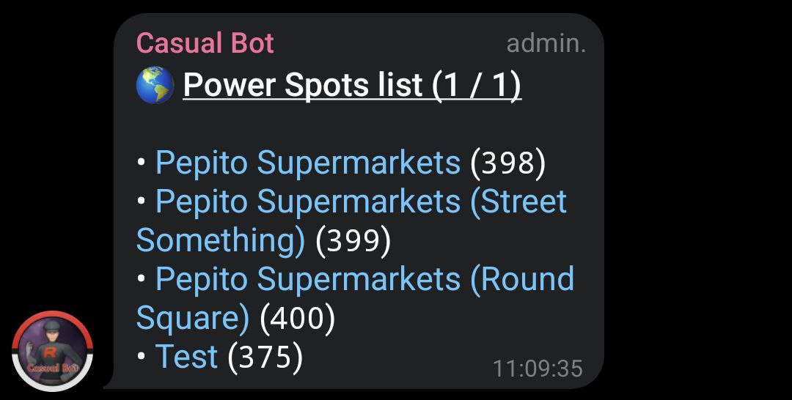

@KingCasualBot
Grupo de ayuda:
@kingcasualbotayuda
Donadores
El bot puede seguir funcionando gracias a las donaciones de la gente que ayudan desde
Patreon
.
Si realizas una donación puedes hacer que los grupos de los que eres creador pasen a ser
premium
durante un tiempo determinado.

Honor Ball
Zeldabalca, Tina Arroyo, ChampPs, LucasOnrubia, Ochomas y Pokémon Go Tarragona

Ultra Ball
SurbitonTolworthPoGo y jillo71
Documentación para usuarios
1. Eventos
La funcionalidad principal disponible en grupos y en canales es un listado de eventos el cual se puede pedir con el comando /eventos.
También se manda notificación cuando empieza o termina un evento.
Canales de eventos:
- Europe/Madrid: @pokemongoeventos
- Portugal: @pokemongoeventosPT
- Central European Time: @pokemongoeventsCET
- Western European Time: @pokemongoeventsWET
- Atlantic/Canary: @pokemongoeventosCanarias
- America/Mexico_City: @pokemongoeventosMexicoCity
- America/Santiago: @pokemongoeventosSantiago
- America/Lima: @pokemongoeventosLima
- America/Buenos_Aires: @pokemongoeventosBuenosAires
- America/New_York: @pokemongoeventsNewYork
2. Combates Pokémon
Esta funcionalidad permite organizar combates Pokémon como Combates Max o Raids.
2.1 ¿Cómo crear un aviso de Combate Pokémon?
2.1.1. Ubicación Telegram
Combate Max
- Manda la ubicación del nodo desde el menú compartir de Telegram
- Responde al mensaje con el comando: /maxbattle Nombre Pokémon HH:MM Nombre nodo
Raid
- Manda la ubicación del gimnasio desde el menú compartir de Telegram
- Responde al mensaje con el comando: /raidbattle Nombre Pokémon HH:MM Nombre gimnasio
2.1.2. Enlace Campfire
Combate Max
Usa el comando: /maxbattle enlace_campfire HH:MM Nombre nodo
Raid
Usa el comando: /raidbattle enlace_campfire Nombre Pokémon HH:MM Nombre gimnasio
2.1.3. Solo comando
Para los nodos o gimnasios que hayan sido añadidos al bot por un administrador se puede crear un aviso sin necesidad de mandar una ubicación o usar un enlace de Campfire.
Combate Max
Si el nodo ha sido añadido usa el comando: /maxbattle Nombre Pokémon HH:MM Nombre nodo
Raid
Si el gimnasio ha sido añadido usa el comando: /raidbattle Nombre Pokémon HH:MM Nombre gimnasio
NOTA: si se activa la opción Permitir gimnasios sin ubicación se puede organizar Raids incluso si el gimnasio no se ha añadido al bot.
2.1.4. Captura de pantalla
Para poder crear organizar una lista de esta forma el grupo tiene que tener al menos 50 miembros o ser premium y requiere que el nodo o gimnasio de la captura de pantalla haya sido añadido al bot por un administrador.
Combate Max
Manda una imagen acompañada del siguiente texto: maxbattle HH:MM
Raid
Manda una imagen acompañada del siguiente texto: raidbattle HH:MM
2.2 Comandos organizador (o admin)
Comandos solo para el organizador o admins del grupo que se pueden usar para modificar o actualizar un mensaje de Combate Pokémon.
2.2.1. Cambiar Pokémon
Para cambiar el Pokémon responde a un mensaje de Combate Pokémon usando el siguiente comando: /pokemon Nombre Pokémon.
2.2.2. Cambiar hora o fecha
Para cambiar la hora responde a un mensaje de Combate Pokémon usando el siguiente comando: /time HH:MM.
Para cambiar la hora a un día posterior responde a un mensaje de Combate Pokémon usando el siguiente comando: /time DD/HH:MM.
Donde DD tiene que ser un día posterior al actual.
2.2.3. Cambiar nombre del nodo o gimnasio
Combate Max
Para cambiar el nombre del nodo responde a un mensaje de Combate Pokémon usando el siguiente comando: /powerspot Nombre nodo.
Raid
Para cambiar el nombre del gimnasio responde a un mensaje de Combate Pokémon usando el siguiente comando: /gym Nombre nodo.
NOTA: si el nombre del nodo o gimnasio se corresponde con el de uno que haya sido añadido al bot por un administrador se actualiza también la ubicación. Si hay coincidencia con más de un nodo o gimnasio o no se encuentra, solo se cambia el nombre.
2.2.4. Cambiar ubicación
Para cambiar la ubicación responde a un mensaje de Combate Pokémon con una ubicación de Telegram.
De forma alternativa se puede responder a un mensaje de Combate Pokémon usando el siguiente comando: /locationcasual enlace_campfire.
2.2.5. Añadir una nota
Para añadir una nota al final de una lista responde a un mensaje de Combate Pokémon usando el siguiente comando: /notecasual Texto nota.
2.2.6. Reflotar un mensaje
Para hacer que un mensaje de Combate Pokémon aparezca el último en el grupo responde al mensaje usando el siguiente comando: /refloat.
2.2.7. Borrar un mensaje
Para borrar un mensaje de Combate Pokémon responde al mensaje usando el siguiente comando: /delete.
2.2.8. Cerrar un mensaje
Para finalizar un mensaje de Combate Pokémon responde al mensaje usando el siguiente comando: /close.
2.3 Comandos admin
Comandos solo para admins del grupo que se pueden usar para modificar o actualizar un mensaje de Combate Pokémon.
2.3.1. Reflotar todos los mensajes
Para hacer que todos los mensajes de Combate Pokémon aparezcan los últimos en el grupo usa el siguiente comando: /refloatallcasual.
2.4 Indicar hora Combate Pokémon de forma relativa
En los comandos para organizar un Combate Pokémon donde se indica la hora con HH:MM también se puede usar el formato +MMm. Con este formato la hora de la lista será MM minutos después de la hora actual.
Ejemplos:
/maxbattle enlace_campfire +60m Nombre nodo
/maxbattle Machamp +30m Nombre nodo
/time +20m
Captura de pantalla de raid junto con raidbattle +15m
3. Registro y perfil
Puedes registrarte y añadir tu código de amigo para mejorar la experiencia al usar la función Combates Pokémon.
Registro
Por mensaje privado a @KingCasualBot, usa el comando /register para más información.
Código de amigo
Una vez registrado, por mensaje privado a @KingCasualBot, usa el comando /friendcode para más información.
Perfil
Para consultar los datos de Pokémon GO proporcionados durante el registro, escribe por mensaje privado a @KingCasualBot y usa el comando /profile.
4. Comandos
Casual Bot responderá a diversas frases como por ejemplo:
-
info huevos / raids / investigaciones / shiny
[Enlace huevos]
|
[Enlace raids]
|
[Enlace investigaciones]
|
[Enlace shiny]
:
información sobre huevos, raids, investigaciones o shiny.
Ejemplo: info huevos .
Los comandos que tienen enlace los puedes poner en un mensaje para que si alguien lo pulsa, le mande la información por privado.
5. Comandos PVP/PVE
-
/casualdex Pokémon (pve)
: información sobre un Pokémon.
Los parámetros entre paréntesis son opcionales.
- pve: mostrar estadísticas de movimientos para PVE.

-
/raidcounters Pokémon (oscuros) (texto)
: mejores counters contra un Pokémon de raid.
Los parámetros entre paréntesis son opcionales.
- oscuros: incluye Pokémon oscuros.
- texto: devuelve la versión de texto.

-
/pokemoncodes Pokémon [liga (básico) (IV mínimo) (amistad)]
: códigos para filtrar un Pokémon.
Los parámetros entre corchetes son opcionales y son usados para obtener un código para PVP. Si se quiere obtener este código es necesario incluir la liga (el resto de párametros son opcionales).
- liga: super, ultra o master.
- básico: incluir si quieres el código para la primera fase evolutiva.
-
IV mínimo:
combinación de IVs mínimos a tener en cuenta en los cálculos (ejemplo: 0/0/0).
Formato: min# (donde # es un número entre 0 y 14). - amistad: hacer los cálculos hasta nivel 51 en vez de 50.

-
/pokemonpvp Pokémon (liga) (IVa/IVd/IVps) (IV mínimo) (nivel mínimo) (amistad) (extra)
: información relacionada con PVP sobre un Pokémon.
Los parámetros entre paréntesis son opcionales.
- liga: super, ultra o master.
- IVa/IVd/IVps: combinación de IVs a comprobar.
-
IV mínimo:
combinación de IVs mínimos a tener en cuenta en los cálculos (ejemplo: 0/0/0).
Formato: min# (donde # es un número entre 0 y 14). -
nivel mínimo:
nivel mínimo a tener en cuenta en los cálculos.
Formato: nivel# (donde # es un número entre 1 y 51). - amistad: hacer los cálculos hasta nivel 51 en vez de 50.
- extra: muestra más información.

-
/moveinfo movimiento
: información detallada de un movimiento.
- movimiento: movimiento del Pokémon.

- /elitefast y /elitecharged : lista de movimientos rápidos y cargados que solo están disponibles usando MT élite. Estos comandos solo están disponibles por privado .
- /ligascg : información sobre las ligas de Liga Combates GO.
Documentación para administradores
1. Ajustes
Para acceder a los ajustes del bot pon el comando /settings@KingCasualBot.
1.1. Activar o desactivar el bot
Permite activar o desactivar el bot. Cuando está desactivado se mantiene activo lo siguiente:
- Comandos solo disponibles para administradores (para ahorrar comprobaciones).
- Anti Spam
- Pulsar botón para hablar
- Mensaje de bienvenida
1.2. Ajustes generales
1.2.1. Comandos
Para activar o desactivar la opción de comandos .
1.2.2. Comandos PVP/PVE
Para activar o desactivar la opción de comandos PVP/PVE .
1.2.3. Borrar mensajes comunes
Si se activa esta opción, Casual Bot borrará mensajes del estilo "alguién más se apunta", "si va más gente me apunto", "estoy por apuntarme a", etc.
1.2.4. Borrar códigos de amigo
Con esta opción se borrarán los mensajes que contengan códigos de amigos. Se incluyen capturas de pantalla (salvo las que estén recortadas de forma extraña).
Se puede poner un mensaje cuando Casual Bot borra un código de amigo usando el comando /fctextcasual seguido del mensaje que quieres poner .
Para borrar el mensaje pon /fctextcasual - .
Para obtener el mensaje actual usa el comando /getfctextcasual .
1.2.5. Anti Spam
Casual Bot borrará los mensajes de spam y baneará al miembro que mandó el mensaje.
1.2.6. Pulsar botón para hablar
Con esta opción cuando entre un nuevo miembro al grupo tendrá que responder a una pregunta pulsando un botón. El mensaje tiene un retardo de 1 segundo para que en el caso de tener otro bot con mensaje de bienvenida, esta se muestre primero.
Si se tiene un mensaje de bienvenida configurado con otro bot y se quiere usar esta opción, lo más recomendable es configurar el mensajes de bienvenida con Casual Bot ya que solo se mostraría si el nuevo miembro pulsa el botón correcto.

1.3. Eventos
Si no has activado los eventos, te pedirá que lo actives. Después de hacer esto (o si ya lo tenías activado), podrás activar o desactivar el comando /eventos , la notificación diaria (a las 8:50) con el listado de eventos o las notificaciones cuando empieza o termina un evento.
Para poder modificar estos ajustes el grupo tiene que tener por lo menos 11 miembros.
1.4. Noticias
Permite que se reenvien al grupo los mensajes que se mandan en diversos canales de noticias.
Para poder modificar estos ajustes el grupo tiene que tener por lo menos 11 miembros.
1.5. Temporizadores
Permite que se borren algunos mensajes pasado el tiempo que se indique.
1.6. Notificaciones nocturnas
Permite configurar el comportamiento del algunos mensajes que se manden de 1:00 a 7:59.
✅: enviar con sonido
🔇: enviar sin sonido
❌: no enviar
1.7. Zona horaria
Permite cambiar la zona horaria del grupo. Esto sirve para recibir las notificaciones de los eventos y las alertas cuando corresponden.
1.8. Idioma
Permite cambiar el idioma del bot.
2. Combates Pokémon
Si se activa, permite organizar combates Pokémon como Combates Max o Raids. Ve a Combates Pokémon (usuario) para más información.
En grupos normales se pueden organizar hasta 7 Combates Pokémon de forma simultánea. En grupos premium este límite aumenta a 12.
Para poder modificar estos ajustes el grupo tiene que tener por lo menos 15 miembros.
Para acceder a los ajustes de Combates Pokémon pon el comando /settings@KingCasualBot y pulsa en "💥 Combates Pokémon".
En este menú se pueden cambiar los siguientes ajustes:
- Activar Combates Max: permite organizar Combates Max
- Activar Combates Raid: permite organizar Raids
- Reconocimiento de imágenes: permite organizar Combates Pokémon usando capturas de pantalla. El grupo tiene que tener al menos 50 miembros o ser premium. Ve a capturas de pantalla para más información.
- Reflotar automático: para hacer que todos los mensajes de Combate Pokémon aparezcan los últimos en el grupo cada 5 minutos cuando queda menos de 30 minutos para la hora de quedada
- Entrenadores extra Dinamax: en Combates Max contra Pokémon Dinamax aumenta el límite de entrenadores de 20 a 40
- Permitir gimnasio sin ubicación: permite organizar Raids sin indicar una ubicación
2.1. Añadir un nodo o gimnasio
Se pueden añadir nodos o gimnasios al bot para poder crear Combates Pokémon solo con comando o usando capturas de pantalla.
Añadir un nodo
Para añadir un nodo usa el siguiente comando: /addpowerspot enlace_campfire Nombre nodo.
Añadir un gimnasio
Para añadir un gimnasio usa el siguiente comando: /addgym enlace_campfire Nombre gimnasio.
Añadir nodos o gimnasios con mismo nombre
Si se tienen 2 o más nodos con el mismo nombre, se pueden distinguir poniendo el siguiente comando: /addpowerspot enlace_campfire Nombre nodo -info Texto para diferenciar.
Ejemplo para 3 nodos con nombre común "Supermercados Pepito":
/addpowerspot enlace_campfire1 Supermercados Pepito -info Calle Tal
/addpowerspot enlace_campfire2 Supermercados Pepito -info Plaza Redonda
/addpowerspot enlace_campfire3 Supermercados Pepito
Si se organiza un Combate Max para estos nodos se preguntará para elegir cuál es el correcto:
De forma equivalente, si se tienen 2 o más gimnasios con el mismo nombre, se pueden distinguir poniendo el siguiente comando: /addgym enlace_campfire Nombre gimnasio -info Texto para diferenciar.
2.2. Lista nodos o gimnasios
Para obtener una lista con los nodos añadidos previamente usa el siguiente comando: /listpowerspots.
Para obtener una lista con los gimnasios añadidos previamente usa el siguiente comando: /listgyms.
El número que aparece junto a cada nodo o gimnasio es un identificador que se puede usar para borrarlo.
2.3. Borrar nodo o gimnasio
Para borrar un nodo o gimnasio es necesario conocer su identificador (ver sección anterior). Una vez se sepas su identificador, usa el siguiente comando: /deletepowerspot id_nodo para borrar un nodo o /deletegym id_gimnasio para borrar un gimnasio.
3. Botones
Se pueden incluir botones en las alertas , mensaje al borrar un código de amigo y mensajes de bienvenida .
Además se puede usar el comando /casualbotones para que el bot devuelva un mensaje con botones.
Formato:
"Texto botón" = "https://enlace.com"
Para poner más de un botón en la misma fila, pon una coma. Ejemplo:
"Texto 1" = "https://enlace1.com", "Texto 2" = "https://enlace2.com"
Ejemplo:
Texto
"Texto botón" = "https://enlace.com"
4. Alertas
Se pueden mandar mensajes de forma periódica. Hay un límite de 10 alertas y se configuran con el comando /alertcasual .
Ejemplo del comando:
/alertcasual 1 2019/10/14-12 3 10-18 Texto alerta
Ayuda:
1: número de la alerta (puede ser un número entre 1 y 10)
2019/10/14-12: fecha de referencia con el formato: año/mes/día-hora
3: frecuencia en horas con la que se repite la alerta
10-18: período de tiempo en el que se manda la alerta
4.1. Anclar una alerta
Si quieres que Casual Bot ancle la alerta que manda puedes usar los parámetros anclarnotificar (notifica a los miembros del grupo) o anclar .
Ejemplo: /alertcasual 1 2019/10/14-12 3 10-18 anclarnotificar Texto alerta .
4.2. Obtener una alerta
Si tienes una alerta y quieres editarla puedes obtener el contenido de la alerta (lo que pusiste con el comando /alertcasual ). Para ello usa el comando /getalert seguido del número de la alerta. Ejemplo: /getalert 1
Si quieres ver todas las alertas del grupo escribe /getalert all .
4.3. Eliminar una alerta
Para eliminar una alerta escribe el comando /alertcasual seguido del número de la alerta y después -. Ejemplo: /alertcasual 1 - .
4.4 Imagen en alertas [PREMIUM]
Instrucciones para añadir una imagen en una alerta:
- Manda una imagen al grupo.
- Cita la imagen y pon el siguiente comando: /alertimagecasual #
Instrucciones para borrar una imagen de bienvenida:
- Escribe: /alertimagecasual # -
En ambos casos # se refiere al número de la alerta.
5. Mensaje de bienvenida
Para añadir un mensaje de bienvenida usa el comando /welcomecasual seguido del mensaje de bienvenida .
Ejemplo: /welcomecasual Hola casual .
Para borrar el mensaje de bienvenida pon /welcomecasual - .
Para consultar el mensaje de bienvenida actual pon /getwelcomecasual .
5.1 Imagen en mensaje de bienvenida [PREMIUM]
Instrucciones para añadir una imagen de bienvenida:
- Manda una imagen al grupo.
- Cita la imagen y pon el siguiente comando: /welcomeimagecasual
Instrucciones para borrar una imagen de bienvenida:
- Escribe: /welcomeimagecasual -
6. Etiquetas HTML en mensajes
Se pueden añadir etiquetas HTML en alertas , mensaje al borrar un código de amigo , mensajes de bienvenida y con el comando /casualbotones .
Etiquetas:
- Negrita: <b>texto</b>
- Cursiva: <i>texto</i>
- Subrayado: <u>texto</u>
-
Tachado:<s>texto</s> -
Mono espaciado:<code>texto</code>
7. Sustitución de texto en mensajes
Se puede sustituir texto en mensaje al borrar un código de amigo y mensajes de bienvenida .
Etiquetas:
- Nombre del nuevo miembro: {user_name} .
- Id del nuevo miembro: {user_id} .
- Nombre del nuevo miembro e id: {user_name_id} .
- Nombre del grupo: {chat_title} .
8. Temas
Telegram permite configurar un grupo en temas separando las conversaciones en distintas secciones.
Las respuestas a mensajes mandados por los miembros de un grupo se mandan al mismo tema desde el que el miembro ha mandado el mensaje.
Para que un bot pueda mandar mensajes a un tema cerrado tiene que ser administrador con el permiso "Gestionar temas".
8.1 Establecer tema para reenvío (eventos y noticias)
Los mensajes que reenvía el bot desde canales (eventos y noticias) no tienen un tema de origen y por lo tanto se tiene que decidir a qué tema reenviar estos mensajes. Por defecto se mandan al tema general.
Para establecer un tema distinto al que reenviar los mensajes, pon el siguiente comando en el tema que quieras que se use: /setfwtopiccasual
Para borrar el tema para reenvíos pon en cualquier tema /setfwtopiccasual - .
8.2 Establecer tema para códigos de amigos
Si tienes activado el borrar códigos de amigos, se puede establecer un tema en el que no se borren este tipo de mensajes.
Para establecer un tema para códigos de amigos, pon el siguiente comando en el tema que quieras que se use: /setfctopiccasual
Para borrar el tema para códigos de amigos pon en cualquier tema /setfctopiccasual - .
Grupos premium
Si realizas una donación desde Patreon puedes hacer que los grupos de los que eres creador pasen a ser premium durante un tiempo determinado.
NOTA: grupos baneados o restringidos no se beneficiarán de las ventajas para grupos premium.
Ventajas de los grupos premium:
- Prioridad extra a la hora de recibir los eventos y noticias.
- Poder activar eventos y noticias en grupos con pocos miembros.
- Se pueden configurar 25 alertas en vez de 10.
- Se puede establecer una imagen en el mensaje de bienvenida.
- Organizar Combates Pokémon con captura de pantalla si el grupo tiene menos de 50 miembros.
Tablas con información
A continuación se muestran unas tablas con información adicional del bot.
1. Funcionalidades
Leyenda:
✅: disponible
❌: no disponible
?
: desactivado por defecto
+XX👨👩👧👦: solo grupos con al menos XX miembros
| Funcionalidad | Privado | Grupos |
|---|---|---|
| Comando eventos | ❌ |
?
+11👨👩👧👦 |
| Notificación diaria (eventos) | ❌ |
?
+11👨👩👧👦 |
| Notificación evento empezado/terminado | ❌ |
?
+11👨👩👧👦 |
| Combates Pokémon | ❌ |
?
+15👨👩👧👦 |
| Casual GO | ❌ |
?
+15👨👩👧👦 |
| Comandos | ✅ | ? |
| Comandos PVP/PVE | ✅ | ? |
| Ajustes | ❌ | ✅ |
| Noticias | ❌ |
?
+11👨👩👧👦 |
| Alertas | ❌ | ✅ |
| Borrar mensajes comunes | ❌ | ? |
| Borrar códigos de amigo | ❌ | ? |
| Anti Spam | ❌ | ? |
| Pulsar botón para hablar | ❌ | ? |
| Mensaje de bienvenida | ❌ | ✅ |
2. Permisos necesarios
⚠️ Si el grupo tiene el modo lento activado es muy recomendable que se añada al bot como administrador para que no se le apliquen las restricciones de tiempo al mandar mensajes.
| Funcionalidad | Permisos |
|---|---|
| Comando eventos | Eliminar mensajes (recomendado) |
| Notificación diaria (eventos) | - |
| Notificación evento empezado/terminado | - |
| Combates Pokémon | Eliminar mensajes (recomendado) |
| Casual GO | Eliminar mensajes (recomendado) |
| Comandos | - |
| Comandos PVP/PVE | Eliminar mensajes (recomendado) |
| Ajustes | Eliminar mensajes (recomendado) |
| Noticias | - |
| Alertas | - |
| Anclar alertas | Anclar mensajes |
| Borrar mensajes comunes | Eliminar mensajes |
| Borrar códigos de amigos | Eliminar mensajes |
| Anti Spam | Eliminar mensajes, suspender usuarios |
| Pulsar botón para hablar | Eliminar mensajes (recomendado), suspender usuarios |
| Mensaje de bienvenida | - |
| Tema cerrado | Gestionar temas |
Preguntas frecuentes
1. ¿Cómo evito el spam?
El bot cuenta con 2 opciones para evitar el spam:
La primera sirve para banear las cuentas que ya estén en el grupo y manden un mensaje que el bot considere como spam.
La segunda sirve para evitar que las cuentas que mandan spam se queden en el grupo.
Normas de uso
Solo pueden usar el bot usuarios o grupos que cumplan las Condiciones de Servicio de Niantic .
Si se incumplen dichas condiciones, se podría banear de poder usar el bot al usuario o grupo (normalmente de forma permanente).
Política de privacidad
Última modificación: 15 de febrero de 2025
Al utilizar KingCasualBot, reconoce que ha leído y comprendido esta Política de privacidad y acepta su contenido.
1. Datos recopilados
El bot recopila los siguientes datos al interactuar con él:
(i) ID de usuario de Telegram
Esto se utiliza para:
- Determinar si el usuario está baneado de poder usar el bot
- Determinar si se trata de un usuario spam
- Guardar datos asociados al usuario relacionados con Casual GO y Combates Pokémon (si el usuario ha utilizado estas funciones)
(ii) Nombre de usuario de Telegram
Sólo se recopila cuando el usuario utiliza la función Combates Pokémon y se utiliza para:
- Permitir el uso de la función Combates Pokémon
(iii) Datos de Pokémon GO proporcionados cuando el usuario se registró en el bot
Sólo se recopila cuando el usuario se registra en el bot y se utiliza para:
- Permitir el uso de la función Combates Pokémon
(iv) Interacciones del usuario
Sólo se recopilan los utilizados para:
- Determinar si el usuario infringe las normas de uso del bot
- Fines de depuración de errores
2. ¿Cómo se guardan los datos?
El ID de usuario de Telegram, el nombre de usuario de Telegram y los datos de Pokémon GO se guardan en una base de datos y también pueden ser guardados en Telegram.
Las interacciones recopiladas con fines de depuración de errores se guardan en archivos de registro que se eliminan automáticamente al cabo de 7 días.
El resto de los datos recopilados se guardan en Telegram.
3. ¿Quién tiene acceso a los datos recopilados?
Los administradores del bot tienen acceso a los datos recopilados.
4. Tus derechos
Se puede enviar una solicitud al grupo de soporte para ejercer cualquiera de los derechos contemplados: acceso, rectificación, supresión, limitación del tratamiento y portabilidad de datos.
Ten en cuenta que para cumplir con los derechos de supresión, tu cuenta de Telegram será marcada como baneada. Por lo tanto, tu ID de usuario de Telegram seguirá guardado para confirmarlo.